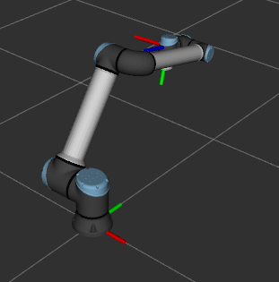
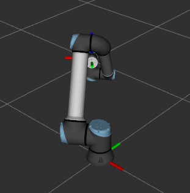
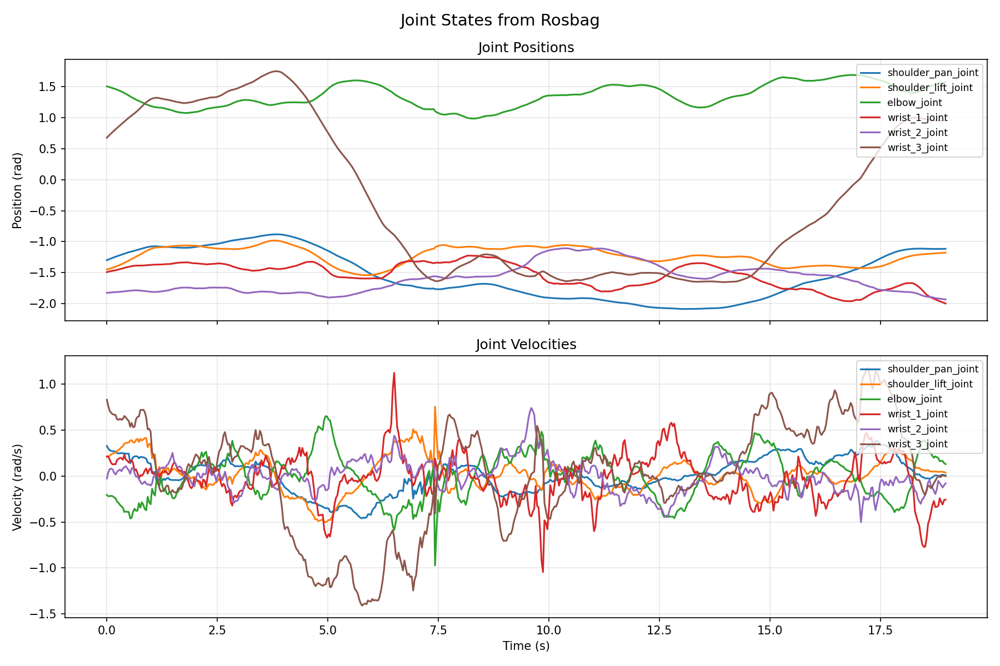
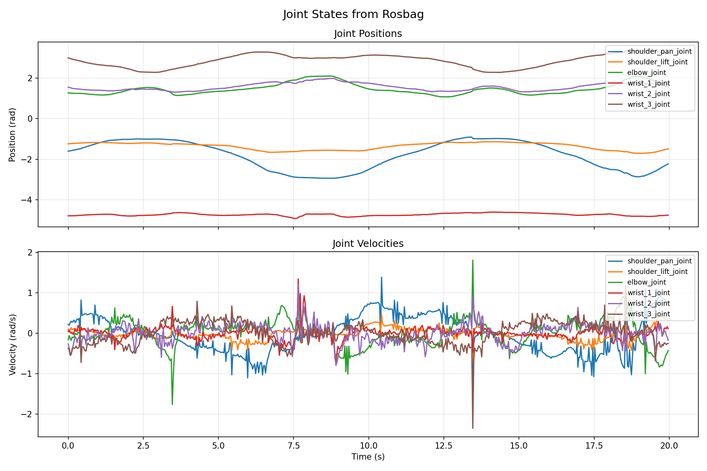
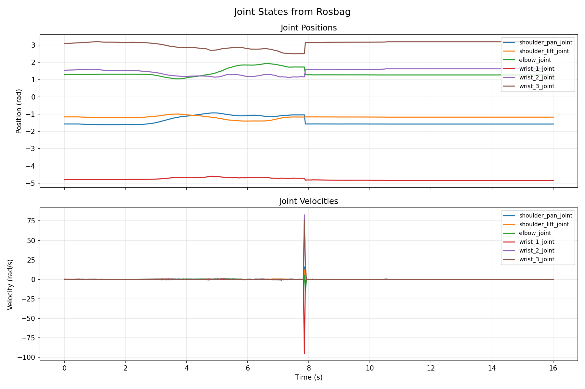

Motivation
Modern robot learning pipelines — particularly Vision-Language-Action (VLA) models — depend on large volumes of high-quality human demonstration data. Traditional teleoperation interfaces such as teach pendants and joysticks are unintuitive for full 6-DOF control, creating a bottleneck in data collection. Smartphones, already equipped with IMUs, cameras, and on-device computer vision, offer a natural alternative: humans already manipulate phones in three dimensions without thinking about it, making the phone itself an ergonomic spatial controller.
Demo Video
System Architecture
The system consists of three components communicating over WebSocket using JSON-encoded messages. All kinematics computation runs in the ROS 2 node at 30 Hz; the relay server adds no processing latency.


Pose Estimation via Visual-Inertial Odometry
The iPhone's 6-DOF pose is estimated by Apple's ARKit using visual-inertial odometry (VIO), an algorithm closely related to the Multi-State Constraint Kalman Filter (MSCKF). VIO fuses two complementary sensor streams to produce a pose estimate at approximately 60 Hz.
IMU Propagation
The IMU provides accelerometer readings \(\mathbf{a}_b\) and gyroscope readings \(\boldsymbol{\omega}_b\) at ~100–1000 Hz. The state is propagated by integration:
The error-state EKF maintains a sliding window of \(N\) recent camera poses in its state vector:
The phone twist is then computed from consecutive ARKit poses via finite differencing:

Control Modes
Velocity Mode
The phone's instantaneous twist \(\dot{\mathbf{x}} = [\mathbf{v}^\top,\, \boldsymbol{\omega}^\top]^\top\) is mapped to joint velocities via the damped least-squares (DLS) pseudoinverse of the UR10e's geometric Jacobian:
The damping factor \(\lambda\) adapts based on the Yoshikawa manipulability measure to prevent instability near singularities:
with \(\lambda_\text{min} = 0.001\), \(\lambda_\text{max} = 0.1\), \(\mu_\text{thresh} = 0.01\). An exponential moving average filter smooths the noisy twist estimate before it enters the solver:

Position Mode
The phone's displacement from a saved reference pose is interpreted as a desired end-effector target via the relative transform:
The UR10e is parameterized using the Denavit-Hartenberg convention. Each joint's homogeneous transform is:
Joint angles are solved sequentially via half-angle substitution, yielding up to 8 solutions. We prefer elbow-up configurations (\(\theta_3 > 0\)) and select the solution minimizing wrapped angular distance to the current configuration.

Results
The system operates in real time with end-to-end latency under 100 ms. Position mode demonstrates responsive joint trajectories following the phone's motion, while velocity mode produces smooth profiles with the adaptive damping mitigating singularity effects. A reset behavior snaps the robot to its home configuration \(\mathbf{q}_0 = [-\pi/2,\,-\pi/2,\,\pi/2,\,-\pi/2,\,-\pi/2,\,0]\) and re-references the phone pose on demand.

Shortcomings & Future Work
- Simulation only — the system was not validated on physical UR10e hardware.
- VIO drift — ARKit pose estimates accumulate error in feature-poor environments.
- No collision avoidance — joint trajectories do not account for obstacles in the workspace.
- IK discontinuities — switching between solution branches can produce jerky motion.
- Future: Real UR10e integration via RTDE, gripper/grasping support, minimum-jerk trajectory smoothing, multi-user teleoperation, and online VIO drift correction.